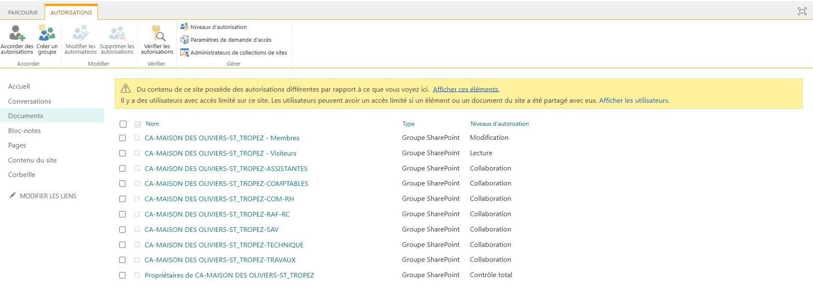
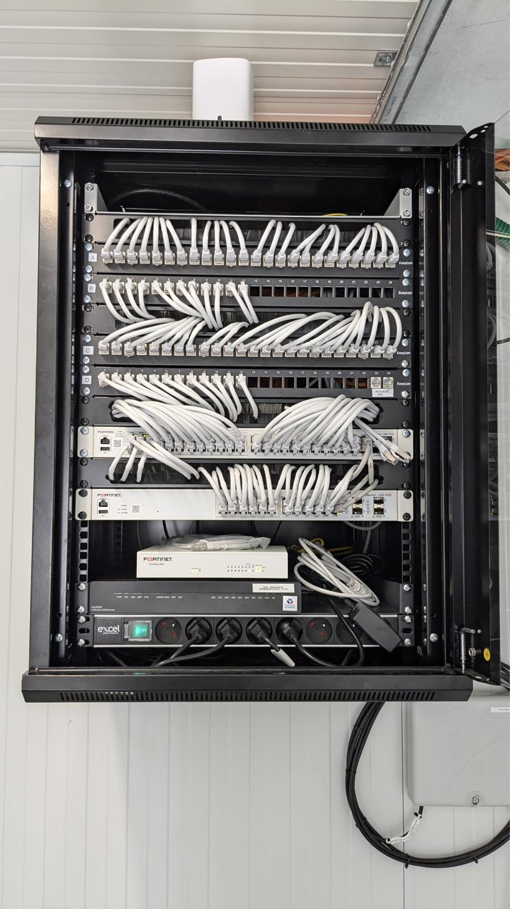

Contexte
L'ouverture d'un nouveau chantier déclenche, côté service informatique, une chaîne d'actions complète : création de l'espace collaboratif des équipes et mise en place de la solution réseau sur site. L'objectif est d'arriver sur le chantier avec un kit prêt à brancher, déjà testé en agence, pour minimiser le temps d'intervention sur place et garantir la continuité de service dès le premier jour d'activité.
Étape 1 — Création de l'espace SharePoint
Chaque nouveau chantier dispose d'un espace SharePoint dédié, créé à partir d'un template préétabli qui définit :
- l'arborescence des dossiers (études, exécution, finance, RH, qualité, etc.) ;
- les groupes d'utilisateurs (conducteurs de travaux, assistantes, encadrement…) ;
- la matrice de permissions par groupe et par dossier.
La sécurité est assurée par un cloisonnement strict des accès : par exemple,
le groupe Assistantes n'a aucun droit sur le dossier
FINANCE. Le template garantit la cohérence et la conformité de
chaque nouveau site avec la politique de gestion documentaire du groupe.

Étape 2 — Préparation du matériel réseau
Le dimensionnement du kit réseau dépend de la taille du chantier. Pour un petit chantier (5 à 10 personnes), la solution déployée se compose de :
- un FortiWifi (point d'accès Wi-Fi sécurisé géré centralement) ;
- un routeur 4G de secours.
FortiWifi : déclaration de l'équipement
Le déploiement de la configuration sur le FortiWifi est pris en charge par l'équipe des ingénieurs réseaux à partir d'un template centralisé. De mon côté, je renseigne un formulaire d'enrôlement avec les informations de l'équipement :
- numéro de série (
SN) ; - Cloud Key ;
- modèle et type d'équipement.
Routeur 4G : configuration manuelle
Je me connecte à l'interface web du routeur et procède aux réglages suivants :
- définition du nom du réseau Wi-Fi et de son mot de passe — ce dernier est volontairement réservé aux techniciens et administrateurs réseau, le routeur 4G servant uniquement de secours en cas de défaillance du Wi-Fi déployé par le FortiWifi ;
- changement du code PIN par défaut et activation du déverrouillage automatique au redémarrage, pour éviter qu'une coupure de courant ne rende le routeur inaccessible à distance.
Test en zone blanche
Avant départ sur le chantier, l'ensemble est testé dans une zone blanche du bâtiment (zone non couverte par le Wi-Fi d'agence). Ce test grandeur nature permet de valider à la fois la connectivité, la couverture et le basculement vers la 4G en cas de besoin.
Étape 3 — Installation sur le chantier
Une fois la solution validée en agence, je me rends sur le chantier pour procéder à l'installation physique des équipements : alimentation, positionnement du point d'accès, raccordement du routeur 4G au FortiWifi, vérification finale de la connectivité depuis un poste.

Étape 4 — Intégration des imprimantes & traceurs
Lorsque le chantier dispose déjà d'imprimantes ou de traceurs, leur intégration au réseau suit une procédure spécifique :
- Raccordement filaire du périphérique sur le switch ou directement sur le FortiWifi ;
- Changement du VLAN du port utilisé pour basculer l'équipement sur le VLAN dédié aux périphériques d'impression ;
- Première connexion en DHCP pour vérifier que le réseau accepte bien le périphérique ;
- Attribution d'une adresse IP fixe préalablement réservée dans le plan d'adressage ;
- Pour les modèles disposant de la fonction scan to mail, demande d'autorisation de l'IP sur le serveur SMTP de Vinci afin que l'équipement puisse envoyer des courriels.
Conclusion
Cette procédure couvre la chaîne complète d'ouverture d'un chantier : provisionnement de l'espace collaboratif, préparation et test de la connectivité, installation sur site et intégration des périphériques. Elle m'a permis de monter en compétence sur l'ensemble des composants d'une infrastructure réseau réelle (Wi-Fi, VLAN, DHCP, IP fixe, pare-feu, SMTP) et de comprendre concrètement les contraintes d'une exploitation multi-sites.
Compétences validées
Cette situation professionnelle valide les compétences suivantes :
Gérer le patrimoine informatique
Recensement et configuration des équipements réseau du chantier, gestion des habilitations SharePoint.
Voir la compétence → E4 · 04Travailler en mode projet
Préparation, test et déploiement coordonnés à la date d'ouverture du chantier.
Voir la compétence → E4 · 03Mettre à disposition des utilisateurs un service informatique
Tests d'intégration en zone blanche, déploiement de la solution réseau et accompagnement sur site.
Voir la compétence → E5 · 01Concevoir une solution d'infrastructure réseau
Dimensionnement de la solution réseau en fonction de la taille du chantier (FortiWifi + routeur 4G).
Voir la compétence → E5 · 02Installer, tester et déployer une solution d'infrastructure réseau
Préparation des équipements, test en zone blanche, installation sur site et intégration des périphériques.
Voir la compétence →